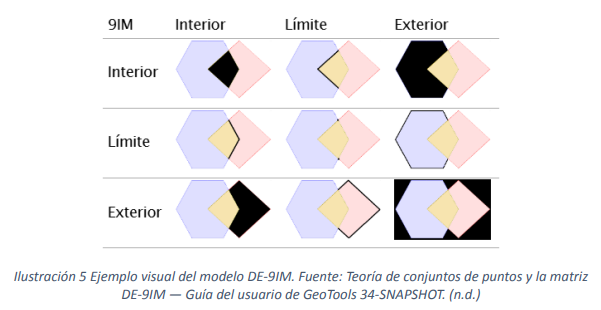

1. ¿Qué es el Modelo DE-9IM?
El Dimensionally Extended 9-Intersection Model (DE-9IM) es un modelo matemático que describe de forma precisa y estandarizada la relación espacial entre dos geometrías. Es la base teórica sobre la que se construyen la mayoría de las funciones de relaciones espaciales en PostGIS, como ST_Intersects, ST_Contains, etc.
El modelo funciona comparando las tres partes de una geometría (Interior, Límite y Exterior) con las tres partes de otra, generando una matriz de 3x3 que describe el resultado de estas nueve intersecciones.
1.1. Interior, Límite y Exterior de una Geometría
Para entender el modelo, primero debemos definir las tres partes de cualquier geometría:
- Interior: El conjunto de puntos "dentro" de la geometría, sin incluir su borde.
- Límite (Boundary): El conjunto de puntos que separan el interior del exterior.
- Exterior: Todo el espacio que no es parte de la geometría (ni su interior ni su límite).
La definición de estas partes varía según el tipo de geometría:
| Tipo de Geometría | Interior | Límite (Boundary) |
|---|---|---|
| Punto | El propio punto. | Vacío (no tiene límite). |
| Línea | Los puntos de la línea, excepto los extremos. | Los puntos de inicio y fin de la línea. |
| Polígono | El área encerrada por el anillo exterior. | Los anillos (exterior e interiores) que definen el polígono. |
2. La Matriz de Intersección 3x3
El modelo DE-9IM representa la relación entre dos geometrías, A y B, mediante una matriz que muestra la dimensión del resultado de la intersección de cada una de sus partes.
La matriz resultante contiene la dimensión de cada intersección:
- 2: La intersección es un área (polígono).
- 1: La intersección es una línea.
- 0: La intersección es un punto.
- F: La intersección es vacía (False).
En PostGIS, esta matriz se representa como una cadena de 9 caracteres. Por ejemplo, la cadena para la intersección de dos polígonos que se solapan (como en la imagen) sería 212101212.
3. El Vínculo entre DE-9IM y las Funciones Espaciales
Cada función de relación espacial (predicado) que usamos en PostGIS, como ST_Contains o ST_Touches, puede ser definida por uno o más patrones de matriz DE-9IM.
En estos patrones, se usan caracteres especiales para búsquedas flexibles:
- T: La intersección existe (dimensión 0, 1 o 2).
- F: La intersección no existe (dimensión -1, vacía).
- *: No importa el resultado de la intersección.
A continuación, se muestran los patrones DE-9IM para algunas de las funciones más comunes:
| Predicado Espacial | Patrón de Matriz DE-9IM | Definición |
|---|---|---|
ST_Equals | T*F**FFF* | Sus interiores se intersecan, y ninguna parte de una geometría intersecta el exterior de la otra. |
ST_Disjoint | FF*FF**** | Ni los interiores ni los límites se intersectan. Están completamente separadas. |
ST_Contains | T*****FF* | El interior de A intersecta el interior de B, pero el interior de B no intersecta el exterior de A. |
ST_Within | T*F**F*** | Es la relación inversa a ST_Contains. |
ST_Touches | FT*******, F**T*****, o F***T**** | Los interiores no se intersectan, pero los límites sí. |
ST_Intersects | T********, *T*******, ***T*****, o ****T**** | La definición más general. Se cumple si al menos una de las 9 intersecciones no es vacía. |
4. Funciones DE-9IM en PostGIS
PostGIS nos permite trabajar directamente con este modelo a través de la función ST_Relate.
4.1. `ST_Relate(geomA, geomB)`
Esta función devuelve la cadena de 9 caracteres de la matriz DE-9IM que describe la relación entre dos geometrías.
Ejemplo: ¿Cuál es la relación entre la localidad de Kennedy y uno de sus barrios?
SELECT ST_Relate(k.geom, b.geom)
FROM kennedy k, barrios b
WHERE b.nombre = 'VILLA ALSACIA II'
LIMIT 1;Esto podría devolver 212FF1FF2, que nos dice, entre otras cosas, que el interior del barrio no se intersecta con el exterior de la localidad (FF en las posiciones 6 y 9).
4.2. `ST_Relate(geomA, geomB, patron)`
Esta versión de la función es booleana. Devuelve true si la matriz DE-9IM de las geometrías coincide con el patrón que le pasamos.
Ejemplo: Comprobar si un barrio está contenido en la localidad de Kennedy usando el patrón DE-9IM de `ST_Within`.
-- Contar cuántos barrios cumplen con el patrón de 'within' para la localidad de Kennedy
SELECT COUNT(*)
FROM barrios b
JOIN kennedy k ON ST_Relate(b.geom, k.geom, 'T*F**F***');Esta consulta es funcionalmente equivalente a usar ST_Within(b.geom, k.geom), pero nos permite crear relaciones espaciales personalizadas y muy específicas si las funciones estándar no son suficientes.